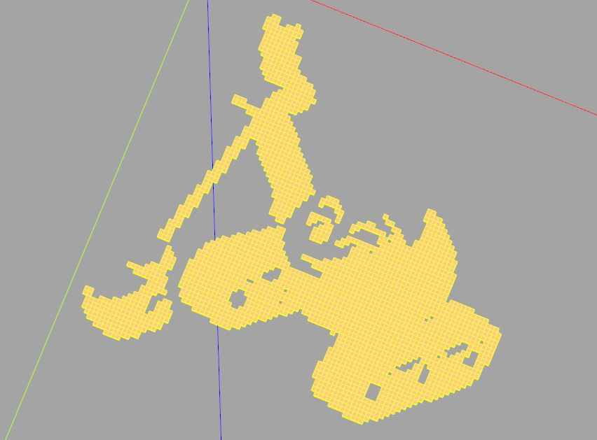
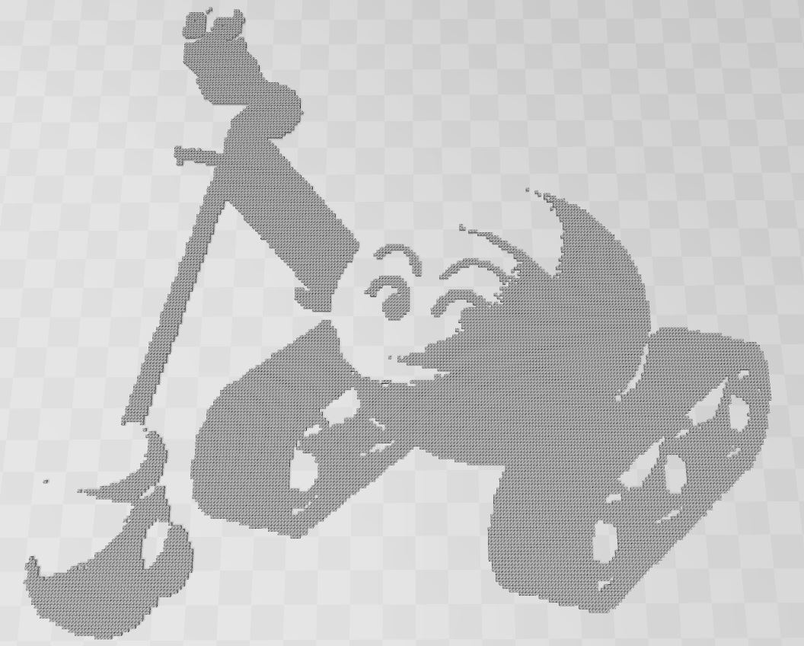

使用 conda 安裝
November 25, 2021從 CQ-editor/releases 下載的 CQ-editor，本身就包裝了 Python 環境，以及 CQ-editor 本身必要的第三方程式庫，在 CQ-editor 解開來的資料夾中，就可以檢視有哪些程式庫了。
如果想安裝其他第三方程式庫，就不能使用這個版本，至少我試過了一些方式，對這個版本都沒有作用。
CadQuery 的介面與程式庫在設計上是分開的，CQ-editor 只是使用者介面的一個實作，除了 CQ-editor 外，還有 Jupyter-CadQuery 這個介面，不過我沒有使用 Jupyter 的習慣，有興趣可以自己試。
Anaconda/Miniconda
我選擇的方式，是透過 conda 來安裝 CadQuery 與 CQ-editor，首先必須有 Anaconda/Miniconda，我使用的是 Miniconda（因為我不喜歡預設裝一大堆東西），以 Windows 版本為例，安裝完成後，可以在開始功能表中，找到 Anaconda，其中有 Anaconda Prompt，執行後依 CadQuery 的〈Getting started〉的指令：
# 建立 cadquery 用的虛擬環境
conda create -n cadquery
# 啟用虛擬環境
conda activate cadquery
若要使用 CQ-editor，可以直接如下安裝：
conda install -c cadquery -c conda-forge cq-editor=master
這會連同 CadQuery 一起安裝，最後的 master 表示安裝 repository 的主線，如果想指定版本的話（例如，主線有 bug 還沒修 XD），就將 = 後面指定，例如 cq-editor=0.2 之類的。
啟動 CadQuery editor
完成後執行 cq-editor 指令，就可以啟動 CQ-editor，因為是透過 conda 安裝，之後每次要使用前，記得要啟用虛擬環境，也就是進到 Anaconda Prompt 後執行 conda activate cadquery，再執行 cq-editor 指令。
為了便於啟動 CQ-editor，我建立了一個捷徑，在捷徑的「目標(T)」中寫了：
%windir%\System32\cmd.exe "/c C:\Winware\miniconda3\Scripts\activate.bat cadquery && cq-editor"
其中「C:\Winware\miniconda3」是我的 Miniconda 安裝位置，你要改成自己的，之後就可以直接按這個捷徑來啟動 CQ-editor 了。
如果你想的話，也可以從 CadQuery repository 的開發主線安裝 CadQuery，這可以體驗最新的功能，以及最新的 bug … XD：
conda install -c conda-forge -c cadquery cadquery=master
同樣地，最後的 master 可以換成你想要的版本，這系列的文件主要是基於 CadQuery 2.1。
第三方程式庫
如果想安裝第三方程式庫，也是進到 Anaconda Prompt 後執行 conda activate cadquery，然後透過 conda 來安裝。
例如，我安裝了 opencv-python，想將以下的圖片讀入後轉為黑白：
透過 CadQuery，我可以在黑色像素處建立一個方塊，例如：
import cadquery as cq
import cv2
# 將圖片讀入轉為黑白
_, img = cv2.threshold(
cv2.imread('caterpillar.jpg', 2),
0, 255,
cv2.THRESH_BINARY + cv2.THRESH_OTSU
)
# 收集每個方塊用的工作平面
voxels = cq.Workplane()
for y in range(len(img)):
for x in range(len(img[0])):
# 如果是黑色像素
if img[y][x] == 0:
# 在 (x, -y) 處建立方塊並加入 voxels
voxels.add(workplane.center(x, -y).box(1, 1, 1))
這程式碼有些細節（opencv-python 的部份，可以參考〈笨學資料運算〉中 OpenCV（opencv-python）的文件），不過現在你不用理會，之後會在適當文件中探討那些細節，總之，這會產生以下的模型：

簡單來說，由於可以結合 Python 的生態系，在建模上就會有更多的可能性了，雖然說寫個 Python 程式轉換一下資料，然後載入 OpenSCAD 中也能完成這件事，不過，能直接在一個程式碼中完成，總是比較方便。
題外話
以下是題外話，不管是 OpenSCAD，或者是 CQ-editor，透過圖形介面來產生大量小模型都有個毛病，也就是圖形介面容易當掉直接關閉，例如以上例來說，太大張的圖片在 CQ-editor 或 OpenSCAD 中沒辦法處理（上面的圖片，是 100 x 100 圖片的結果）。
面對這種情況，可以先用小張的圖片來測試與預覽，CadQuery 可以改為程式庫的方式來操作並匯出模型檔：
import cadquery as cq
from cadquery import exporters
import cv2
_, img = cv2.threshold(
cv2.imread('caterpillar.jpg', 2),
0, 255,
cv2.THRESH_BINARY + cv2.THRESH_OTSU
)
workplane = cq.Workplane()
voxels = cq.Workplane()
for y in range(len(img)):
for x in range(len(img[0])):
if img[y][x] == 0:
voxels.add(workplane.center(x, -y).box(1, 1, 1))
exporters.export(voxels, 'c:/workspace/caterpillar.stl')
少了圖形介面的負擔，就能產生想要的結果（OpenSCAD 的話，也可以直接在文字模式執行指令稿來解決大量模型實體，會讓圖形介面崩潰的問題）。
例如，以下是使用 250 x 250 的圖片，透過以上程式產生的 STL：
